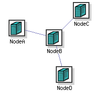
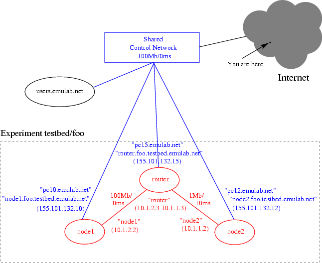

This section of the tutorial describes how to run your first Emulab
experiment. We cover basic NS syntax and various operational issues
that you will need to know in order conduct experiments to completion.
Later sections of the tutorial will cover more advanced topics such as
loading your own RPMs automatically, running programs automatically,
running batch jobs, creating your own disk images and loading those
images on your nodes. For your convenience, there is also a
Java GUI
interface you can use to create NS files for your experiments.
-
Logging Into the Web Interface
If you already have an account on Emulab or Netbed, all you need to do is
go to Emulab Home
Page, enter your login name and your password, and then click on
the "Login" button. If you don't have an account, click on the "Join
Project" or "Start Project" links. For an overview of how you go about
getting an Emulab account, go to the "How To Get Started" page.
-
Designing a Network Topology
Part of Emulab's power lies in its ability to assume many different
topologies; the description of a such a topology is a necessary part
of an experiment. (Note: You may want to take a look at our
Java GUI to build experiments
without directly editing NS files.)
Emulab uses the "NS" ("Network Simulator") format to describe network
topologies. This is substantially the same Tcl-based format
used by ns-2. Since
Emulab offers emulation, rather than simulation, these files are
interpreted in a somewhat different manner than ns-2. Therefore, some
ns-2 functionality may work differently than you expect, or may not be
implemented at all. Please look for warnings of the form:
*** WARNING: Unsupported NS Statement!
Link type BAZ, using DropTail!
For those unfamiliar with the NS format, here is a small example
(We urge all new Emulab users to begin with a small 3-5 node experiment
such as this, so that you will become familiar with NS syntax and the
practical aspects of Emulab operation). Let's say we are trying to
create a test network which looks like the following:

(A is connected to B, and B to C and D with a LAN.)
An NS file which would describe such a topology is as follows. First
off, all NS files start with a simple prologue, declaring a simulator
and including a file that allow you to use the special
tb- commands:
# This is a simple ns script. Comments start with #.
set ns [new Simulator]
source tb_compat.tcl
Then define the 4 nodes in the topology.
set nodeA [$ns node]
set nodeB [$ns node]
set nodeC [$ns node]
set nodeD [$ns node]
Next define the link and the LAN that connect the nodes. NS syntax
permits you to specify the bandwidth, latency, and queue type. Note
that since NS can't impose artificial losses like Emulab can, there is
a separate command to add loss on a link. For our example, we will
define a full speed LAN between B, C, and D, and a shaped link from
node A to B.
set link0 [$ns duplex-link $nodeB $nodeA 30Mb 50ms DropTail]
tb-set-link-loss $link0 0.01
set lan0 [$ns make-lan "$nodeD $nodeC $nodeB " 100Mb 0ms]
In addition to the standard NS syntax above, a number of
extensions have been added that allow you
to better control your experiment.
For example, you may specify what
Operating System is booted on your nodes. We currently support FreeBSD
4.10, RedHat Linux 9.0, Fedora Core 4, and
Windows XP.
Windows 2000 is not supported.
Fedora Core 2 (Linux 2.6)
is available but unsupported. We also support
OSKit kernels on the
Emulab PCs.
Click List ImageIDs and
OSIDs in the Emulab web interface "Interaction" pane to see the current
list of Emulab-supplied OS. By default, our most recent Linux image is
selected.
tb-set-node-os $nodeA FBSD-STD
tb-set-node-os $nodeC RHL-STD
tb-set-node-os $nodeC WINXP-UPDATE
In a topology like this, you will likely want to communicate between
all the nodes, including nodes that aren't directly connected,
like A and C. In order for that to happen, we must enable
routing in our experiment, so B can route packets for the other
nodes. The typical way to do this is with Static routing. (Other
options are detailed below, in the
Routing section.)
$ns rtproto Static
Lastly, all NS files end with an epilogue that instructs the simulator
to start.
# Go!
$ns run
If you would like to try the above example, the completed NS file can be run as an experiment in your
project.
Because NS is based on TCL, the full power of the TCL language is
available for you to use in your NS files, including loops,
control structures, and even procedures/functions. Here's an
example of a simple loop:
(Download this example: loop.ns)
# This is a simple ns script that demonstrates loops.
set ns [new Simulator]
source tb_compat.tcl
set maxnodes 3
set lanstr ""
for {set i 1} {$i <= $maxnodes} {incr i} {
set node($i) [$ns node]
append lanstr "$node($i) "
tb-set-node-os $node($i) FBSD-STD
}
# Put all the nodes in a lan
set big-lan [$ns make-lan "$lanstr" 100Mb 0ms]
# Go!
$ns run
-
Beginning the Experiment
After logging on to the Emulab Web Interface, choose the "Begin
Experiment" option from the menu. First select which project you want
the experiment to be configured in. Most people will be a member of just
one project, and will not have a choice. If you are a member of
multiple projects, be sure to select the correct project from the
menu.
Next fill in the `Name' and `Description' fields. The Name should be a
single word (no spaces) identifier, while the Description is a multi
word description of your experiment. In the "Your NS file" field,
place the local path of an NS file which you have created to
describe your network topology. This file will be uploaded through
your browser when you choose "Submit."
After submission, Emulab will begin processing your
request. This will likely take several minutes, depending on how large
your topology is, and what other features (such as delay nodes and
bandwidth limits) you are using. Assuming all goes well, you will
receive an email message indicating success or failure, and if
successful, a listing of the nodes and IP address that were allocated
to your experiment.
For the NS file described above, you would receive a listing that looks
similar to this:
Virtual Node Info:
ID Type OS Qualified Name
--------------- ------------ --------------- --------------------
nodeA pc nodeA.myexp.myproj.emulab.net
nodeB pc nodeB.myexp.myproj.emulab.net
nodeC pc nodeC.myexp.myproj.emulab.net
nodeD pc nodeD.myexp.myproj.emulab.net
Physical Node Mapping:
ID Type OS Physical
--------------- ------------ --------------- ------------
tbsdelay0 pc850 FBSD47-STD pc61
nodeB pc850 RHL73-STD pc63
nodeC pc600 RHL73-STD pc31
nodeD pc600 RHL73-STD pc34
nodeA pc600 RHL73-STD pc13
Virtual Lan/Link Info:
ID Member IP/Mask Delay BW (Kbs) Loss Rate
--------------- --------------- --------------- --------- --------- ---------
lan0 nodeC:0 10.1.2.3 0.00 100000 0.000
255.255.255.0 0.00 100000 0.000
lan0 nodeB:1 10.1.2.4 0.00 100000 0.000
255.255.255.0 0.00 100000 0.000
lan0 nodeD:0 10.1.2.2 0.00 100000 0.000
255.255.255.0 0.00 100000 0.000
link0 nodeB:0 10.1.1.2 25.00 30000 0.005
255.255.255.0 25.00 30000 0.005
link0 nodeA:0 10.1.1.3 25.00 30000 0.005
255.255.255.0 25.00 30000 0.005
Physical Lan/Link Info:
ID Member Delay Node Delay BW (Kbs) PLR Pipe
--------------- --------------- ------------ -------- -------- ------ ---------
link0 nodeA tbsdelay0 50.00 30000 0.010 100
link0 nodeB tbsdelay0 50.00 30000 0.010 110
Route List:
Node Interface Dest Nexthop Type Cost
--------------- --------------- --------------- --------------- ----- ----
nodeA 10.1.1.3 10.1.2.4 10.1.1.2 host 0
nodeA 10.1.1.3 10.1.2.0 10.1.1.2 net 0
nodeC 10.1.2.3 10.1.1.0 10.1.2.4 net 0
nodeD 10.1.2.2 10.1.1.0 10.1.2.4 net 0
A few points should be noted:
- A single delay node was allocated and inserted into the link
between nodeA and nodeB. This link is invisible from your
perspective, except for the fact that it adds latency, error,
or reduced bandwidth. However, the information for the delay links
are included so that you can
modify the delay
parameters after the experiment has been created.
- Delays of less than 2ms (per trip) are too small to be
accurately modeled at this time, and will be silently ignored.
A delay of 0ms can be used to indicate that you do not want
added delay; the two interfaces will be "directly" connected to
each other.
- Each link in the "Virtual Lan/Link" section has its delay, etc.,
split between two entries. One is for traffic coming into the
link from the node, and the other is for traffic leaving the
link to the node. In the case of links, the four entries often
get optimized to two entries in the "Physical Lan/Link"
section.
- The names in the "Qualified Name" column refer to the control
network interfaces for each of your allocated nodes. These names
are added to the Emulab nameserver map on the fly, and are
immediately available for you to use so that you do not have to
worry about the actual physical node names that were chosen. In
the names listed above, `myproj' is the name of the project that
you chose to work in, and `myexp' is the name of the experiment
that you provided in the "Begin an Experiment" page.
- Please don't use the "Qualified Name" from within nodes in your
experiment, since it will contact them over the control network,
bypassing the link shaping we configured.
(See also these two FAQ entries:
here and
here.)
-
Using your Nodes
By the time you receive the email message listing your nodes, the
Emulab configuration system will have ensured that your nodes are
fully configured and ready to use. If you have selected one of the
Emulab-supported operating system images (FreeBSD, Linux, or
Windows XP),
this configuration process includes:
- loading fresh disk images so that each node is in a known clean
state;
- rebooting each node so that it is running the OS specified in the
NS script;
- configuring each of the network interfaces so that each one is
"up" and talking to its virtual LAN (VLAN);
- creating user accounts for each of the project members;
- mounting the projects NFS directory in /proj so that project
files are easily shared amongst all the nodes in the experiment;
- creating a /etc/hosts file on each node so that you may refer to the
experimental interfaces of other nodes by name instead of IP number;
- configuring all of the delay parameters;
- configuring the serial console lines so that project members may access the
console ports from users.emulab.net or directly from their desktop.
As this point you may log into any of the nodes in your experiment.
You will need to use Secure Shell (ssh), and you should use the
`qualified name' from the nodes mapping table so that you do not form
dependencies on any particular physical node. Your login name and
password will be the same as your Web Interface login and password.
The /etc/hosts file on each node will provide a local name mapping for
the other nodes in your experiments. You should take care to use these
names (or IP numbers) and not the .emulab.net names listed in
the node mapping, since the Emulab names refer to the control network
LAN that is shared amongst all nodes in all experiments. It is only
the experimental interfaces that are entirely private to your
experiment. (See also these two FAQ entries:
here and
here.)
NOTE: The configuration process just described occurs only on
Emulab constructed operating system images. If you are using an OSKit
kernel, or your own disk image with your own operating system, you
will be responsible for all of the configuration. At some point we
hope to provide tools to assist in the configuration, but for now you
are on your own. Ask
Testbed Ops for help or more information.
-
I need root access!
If you need to customize the configuration, or perhaps reboot nodes,
you can use the "sudo" command, located in /usr/local/bin
on FreeBSD and Linux, and /usr/pkg/bin on NetBSD.
All users are added to the Administrators group on
Windows XP
nodes. Our
policy is very liberal; you can customize the configuration in any way
you like, provided it does not violate Emulab's
administrative policies. As as example, to reboot a node that is
running FreeBSD:
/usr/local/bin/sudo reboot
-
My node is wedged!
This is bound to happen when running experimental software and/or
experimental operating systems. Fortunately we have an easy way for
you to power cycle nodes without requiring Tested Operations to get
involved. If you must power cycle a node, log on to users.emulab.net
and use the "node_reboot" command:
node_reboot <node> [node ... ]
You may also reboot all the nodes in an experiment by using the -e
option to specify the project and experiment names. For example:
node_reboot -e testbed,multicast
-
I've scrogged my disk!
Scrogging your disk is certainly not as common, but it does happen.
You can either terminate your experiment, and recreate it (which will
allocate another group of nodes), or if you prefer you can reload the
disk image yourself. You will of course lose anything you have stored
on that disk; it is a good idea to store only data that can be easily
recreated, or else store it in your project directory in /proj.
Reloading your disk with a fresh copy of the default image is easy,
and requires no intervention by Emulab staff:
os_load <node> [node ... ]
-
I've finished my experiment
When your experiment is completed, and you no longer need the
resources that have been allocated to it, you will need to terminate
the experiment via the Emulab Web Interface. Click on the "End An
Experiment" link. You will be presented with a list of all of the
experiments in all of the projects for which you have the
authorization to terminate experiments. Select the experiment you want
to terminate by clicking on the button in the "Terminate" column on
the right hand side. You will be asked to confirm your choice.
The Emulab configuration system will then tear down your experiment,
and send you an email message when the process is complete. At this
point you are allowed to reuse the experiment name (say, if you wanted
to create a similar experiment with different parameters).
-
Scheduling experiment swapout/termination
If you expect that your experiment should run for a set period of
time, but you will not be around to terminate or swap the experiment
out, then you should use the scheduled swapout/termination feature.
This allows you to specify a maximum running time in your NS file so
that you will not hold scarce resources when you are offline. This can
also be used in conjunction with batch
mode experiments to ensure that they do not run longer than is
reasonably expected. To schedule a swapout or termination in your NS
file:
$ns at 2000.0 "$ns terminate"
or
$ns at 2000.0 "$ns swapout"
-
Getting Help!
If you have any questions or problems, or just want to comment on
Emulab's operation (maybe you want to suggest an improvement to one of
the Web pages), feel free to contact us by sending email to
Testbed Operations. Please send all
correspondence to this address, not to individual members of our
team. Messages that aren't on this list may not get responses.
Also note that much of the software is in development, and
occasionally things might break or not work as you expect.
Again, please feel free to contact us.
-
A more advanced example
We have a more
advanced example demonstrating the use of RED queues, traffic
generators, the event system, program objects, and the
integration of network simulation (NS/NSE).
-
The Emulab "Control Network"
The Emulab control network is the source of a number of problems related
to the behavior of network links in an experiment. So in this section we
attempt to explain exactly what the control network is, why problems occur,
and how to avoid them.
Every physical node in the
testbed has one interface connected to a common 100Mb LAN. This interface is
used by the testbed infrastructure to configure experiments (e.g. distribute
account info, load disks, etc.). It is also used by experimenter to communicate
with the nodes from outside Emulab or from users.emulab.net (e.g., ssh).
Finally, it may be used by an experimenter to monitor activity during an
experiment. Control net links have a fixed address and not configured
by the user.
The control network is differentiated from the experimental network
which is the set of links specified in the experiment topology over which
experiment applications should communicate. Experiment links are configured
by the user and may be shaped and otherwise controlled by that user.
To illustrate the difference, consider the simple two-nodes-and-a-router
configuration described by the NS snippet:
source tb_compat.tcl
set ns [new Simulator]
set node1 [$ns node]
set router [$ns node]
set node2 [$ns node]
set linkA [$ns duplex-link $node1 $router 100Mb 0ms DropTail]
set linkB [$ns duplex-link $router $node2 1Mb 10ms DropTail]
$ns rtproto Static
$ns run

Figure 1. Control network interfaces (blue) to an
experiment topology (red).
From your vantage point out in the Internet, or on the machine
"users.emulab.net," you can access a node in your experiment via its
canonical Emulab name
(e.g., "pc12.emulab.net")
or by the DNS alias that is assigned when your experiment is created
(e.g., "node2.foo.testbed.emulab.net").
Both types of names use the fixed 100Mb control network link
(IP: 155.101.132.12) to access the node. These control net links are shown
in blue in Figure 1.
The view from inside an experiment node is different. In an ideal world,
applications running inside the experiment would not even know about the
control network, since it is not part of the topology. However, the control
net must be visible to nodes for several practical reasons, most notably
allowing login from remote sites and the ability of the node to access
the shared NFS /proj and /users filesystems.
As the control net is visible to applications on a node, it can lead to
its inadvertent use by applications. In the above example, consider a ping
from node1 to node2. The expectation is that traffic will pass through the
included router and over the shaped link to node2, resulting in round-trip
times of 20ms:
1 node1.foo.testbed.emulab.net> ping node2
PING node2-linkB (10.1.1.2) from 10.1.2.2 : 56(84) bytes of data.
64 bytes from node2-linkB (10.1.1.2): icmp_seq=1 ttl=63 time=20.3 ms
64 bytes from node2-linkB (10.1.1.2): icmp_seq=2 ttl=63 time=20.3 ms
...
2 node1.foo.testbed.emulab.net> ping node2.foo.testbed.emulab.net
PING pc12.emulab.net (155.101.132.12) from 155.101.132.10 : 56(84) bytes of data.
64 bytes from pc12.emulab.net (155.101.132.12): icmp_seq=1 ttl=64 time=0.291 ms
64 bytes from pc12.emulab.net (155.101.132.12): icmp_seq=2 ttl=64 time=0.124 ms
...
/etc/hosts file that is created
on each node. Fully qualified names are resolved by the Emulab nameserver and
return the routable, control net address. Figure 1 shows the various names
each node can be named by, and which interface they will resolve to.
Accidental use of the control net interface in an experiment commonly occurs
due to one of three reasons:
- The experiment user configures an application incorrectly.
By specifying either a node's fully qualified name or its control net address
when configuring an application, that application will use the wrong interface.
- An application itself decides which interface to use based on a
node's hostname. Since the hostname is set to the fully qualified name,
that name will resolve to the control net address.
- An application uses all available interfaces. By default, many server
applications will listen on all interfaces they discover via ioctls or other
kernel mechanisms. This will include the control interface.
In the first case, you just need to be careful to use the correct name or
address. For the latter two cases, you might need to modify the application.
Fortunately, most applications include options enabling you to explicitly
specify which interfaces to use (or not use).
We recognize that this is not ideal, and will be trying to find better ways
to "hide" the control net in the future.
-
Installing RPMS automatically
The Emulab NS extension tb-set-node-rpms allows you to
specify a (space separated) list of RPMs to install on each of your
nodes when it boots:
tb-set-node-rpms $nodeA /proj/myproj/rpms/silly-freebsd.rpm
tb-set-node-rpms $nodeB /proj/myproj/rpms/silly-linux.rpm
tb-set-node-rpms $nodeC /proj/myproj/rpms/silly-windows.rpm
-
Installing TAR files automatically
The Emulab NS extension tb-set-node-tarfiles allows you to
specify a set of tarfiles to install on each of your nodes when it
boots. While similar to the tb-set-node-rpms
command, the format of this command
is slightly different in that you must specify a directory in
which to unpack the tar file. This avoids problems with having to
specify absolute pathnames in your tarfile, which many modern tar
programs balk at.
tb-set-node-tarfiles $nodeA /usr/site /proj/myproj/tarfiles/silly.tar.gz
-
Starting your application automatically
You can start your application automatically when your nodes boot for
the first time (experiment is started or swapped in) by
using the tb-set-node-startcmd NS extension. The argument is
a command string (pathname of a script or program, plus arguments)
that is run as the UID of the experiment creator, after the
node has reached multiuser mode. The command is invoked using
/bin/csh, and the working directory is undefined (your script
should cd to the directory you need). You can specify the same program
for each node, or a different program. For example:
tb-set-node-startcmd $nodeA "/proj/myproj/runme.nodeA"
tb-set-node-startcmd $nodeB "/proj/myproj/runme.nodeB"
tb-set-node-startcmd $nodeB "/proj/myproj/runme >& /tmp/foo.log"
The start command is implemented using
Program Objects, which are described in more detail in the
Advanced Tutorial. Note that the start command is run only when
the experiment is swapped in. If you want to rerun the experiment, you
can swap the experiment out and back in, or you can reboot all of the
nodes in your experiment. If rebooting, you must fire off the program
object(s) yourself by restarting the
Event System
on users.emulab.net:
eventsys_control <proj> <expt> replay
$ns at 2000.0 "$nodeA_startcmd stop"
$ns at 2010.0 "$nodeA_startcmd start"
tevc -e myproj/myexpt now nodeA_startcmd stop
tevc -e myproj/myexpt now nodeA_startcmd start
-
How do I know when all my nodes are ready?
It is often necessary for your start program to determine when all
of the other nodes in the experiment have started, and are ready to
proceed. Sometimes called a barrier, this allows programs to
wait at a specific point, and then all proceed at once. Emulab
provides a simple form of this mechanism using a synchronization server
that runs on a node of your choice. You specify the node in your NS
file:
tb-set-sync-server $nodeB
#!/bin/sh
if [ "$1" = "master" ]; then
/usr/testbed/bin/emulab-sync -i 4
else
/usr/testbed/bin/emulab-sync
fi
/usr/site/bin/dosilly
/usr/testbed/bin/emulab-sync -a -i 4
/usr/testbed/bin/emulab-sync -a -i 4 -n mybarrier
/usr/testbed/bin/emulab-sync -n mybarrier
-
Setting up IP routing between nodes
As Emulab strives to make all aspects of the network controllable by the
user, we do not attempt to impose any IP routing architecture or protocol
by default.
However, many users are more interested in end-to-end aspects and don't
want to be bothered with setting up routes. For those users we provide
an option to automatically set up routes on nodes which run one of our
provided FreeBSD, Linux or
Windows XP disk images.
You can use the NS rtproto syntax in your NS file to enable
routing:
$ns rtproto protocol
Session, Static, Static-old,
or Manual.
Session routing provides fully automated routing support,
and is implemented by enabling gated running the OSPF protocol
on all nodes in the experiment. This is not supported on
Windows XP nodes.
Static routing also provides automatic routing support, but
rather than computing the routes dynamically, the routes are precomputed by a
distributed route computation algorithm running in parallel on the experiment
nodes.
Static-old specifies use of the older centralized route
computation algorithm, precomputing the nodes when the experiment is created,
and then loading them onto each node when it boots.
Manual routing allows you to explicitly specify per-node
routing information in the NS file. To do this, use the
Manual routing option to rtproto,
followed by a list of routes using the add-route command:
$node add-route $dst $nexthop
$client add-route $server $router
$client add-route [$ns link $server $router] $router
$client add-route $serverlan $router
add-route command to
establish a route for the reverse direction; thus allowing you to
specify differing forward and reverse routes if so desired.
These statements are converted into appropriate route(8)
commands on your experimental nodes when they boot.
In the above
examples, the first form says to set up a manual route between
$client and $server, using $router as the
nexthop; $client and $router should be directly
connected, and the interface on $server should be
unambiguous; either directly connected to the router, or an edge node
that has just a single interface.
 If the destination has multiple interfaces configured, and it is not
connected directly to the nexthop, the interface that you are
intending to route to is ambiguous.
In the topology shown to the right,
$nodeD has two interfaces configured. If you attempted to
set up a route like this:
If the destination has multiple interfaces configured, and it is not
connected directly to the nexthop, the interface that you are
intending to route to is ambiguous.
In the topology shown to the right,
$nodeD has two interfaces configured. If you attempted to
set up a route like this:
$nodeA add-route $nodeD $nodeB
$nodeA add-route [$ns link $nodeD $nodeC] $nodeB
The last form of add-route command is used when adding a
route to an entire LAN. It would be tedious and error prone to specify
a route to each node in a LAN by hand. Instead, just route to the
entire network:
set clientlan [$ns make-lan "$nodeE $nodeF $nodeG" 100Mb 0ms]
$nodeA add-route $clientlan $nodeB
Two final, cautionary notes on routing:
- You might be tempted to set the default route on your nodes
to reduce the number of explicit routes used. Don't do it.
That would prevent nodes from contacting the outside world, i.e., you.
The default route must be set to use the control network
interface.
- If you use your own routing daemon, you must avoid using the
control network interface in the configuration. Since every node
in the testbed is directly connected to the control network LAN,
a naive routing daemon configuration will discover that any node
is just one hop away, via the control network, from any other node
and all inter-node traffic will be routed via that interface.
Batch Mode
-
Batch Mode Introduction
Batch Mode experiments can be created on Emulab via the "Create
an Experiment" link in the operations menu to your left. There is a
checkbox near the bottom of the form that indicates you want to use
the batch system. There are several important differences between a
regular experiment and a batch mode experiment:
- The experiment is run when enough resources (ie: nodes) are
available. This might be immediately, or it might be sometime in
the future.
- Once your NS file is handed off to the system, the batch system
is responsible for setting up the experiment and tearing it down
once the experiment has completed. You will receive email
notifying you when the experiment has been scheduled and when it
has been terminated.
- Your NS file must define a start command to run on each
node using the tb-set-node-startcmd
NS extension. It is the exit value(s) of the start command(s) that
indicates that the experiment is completed; when all of the
nodes have run their respective start commands and reported
their exit values, the batch system will then tear down the
experiment.
The batch system may also be used for "queuing" interactive experiments.
By leaving out tb-set-node-startcmd commands in the NS file,
an experiment will be started when enough nodes are available,
but then remain active until you (or the system) swap or terminate it.
Existing Batch Mode experiments
(both true batch experiments and queued interactive ones)
may be "stopped" and "queued."
Stopping a Batch Mode experiment has identical semantics to swapping
out a regular experiment, including loss of local node disk state,
and thus is not really a "clean stop."
Queueing a Batch Mode experiment is almost the same as a regular experiment
swapin, the difference being that the swapin may be delayed if insufficient
resources are available at the time of the swapin..
Unfortunately, while Batch Mode makes running experiments much easier,
it also makes wasting resources far easier, e.g., a user queues up an
interactive experiment and then is not around when it finally gets swapped in.
To counter this, the idle swap threshold for a Batch Mode experiment is
typically set lower than that for a regular experiment, usually 15 minutes.
If necessary, this can be changed using the "Edit Experiment Metadata" link
on an experiment's page. The modified value will remain in effect til the
next swapout.
While multiple Batch Mode experiments may be running in Emulab simultaneously,
the current policy is that there can only be one such experiment per-user,
per-project. That is, two users in the same project may run experiments
simultaneously and one user may run simultaneous experiments in different
projects.
Finally, note that the rights and responsibilities of a Batch Mode experiment
are conferred at creation time. It is not possible to, for example, swap out
a regular experiment and then swap it back in as a Batch Mode experiment
(i.e., to get delayed swapin semantics). This is unfortunate.
-
A Batch Mode Example
Consider example NS file batch.ns.
First off, we have to arrange for the experimental software to be
automatically installed when the nodes boot. This is done with the tb-set-node-tarfiles NS extension:
tb-set-node-tarfiles $nodeA /usr/site /proj/testbed/tarfiles/silly.tar.gz
tb-set-node-tarfiles $nodeB /usr/site /proj/testbed/tarfiles/silly.tar.gz
tb-set-node-startcmd $nodeA "/usr/site/bin/run-silly >& /tmp/foo.log"
tb-set-node-startcmd $nodeB "/usr/site/bin/run-silly >& /tmp/foo.log"
tb-set-node-startcmd $nodeC "/bin/echo"
The status of your batch experiment can be viewed via the "Experiment
Information" link in the Web Interface Options menu. You may also
cancel a batch after you have submitted it using the "Terminate"
option in the information display. You may also stop a batch job,
causing it to swap out by using the "Stop" option. The batch may be
reposted at any time.
The batch system is still under development. Currently, the batch
system tries every 10 minutes to run your batch. It will send you
email every 5 or so attempts to let you know that it is trying, but
that resources are not available. It is a good idea to glance at the
message to make sure that the problem is lack of resources and not an
error in your NS file.
Custom OS Images
If your set of operating system customizations cannot be easily
contained within an RPM/TAR (or multiple RPM/TARs), then you can
create your own custom OS image; Emulab allows you to create your own
disk images and load them on your experimental nodes, automatically
when your experiment is created or swapped in. Once you have created a
custom disk image (and the associated image/osid
descriptor for it, you can use that OSID in your NS file. When
your experiment is swapped in, the testbed system will arrange for
your disks to be loaded in parallel using a locally written multicast
disk loading protocol. Experience has shown that it is much faster to
load a disk image on 10 nodes at once, then it is to load a bunch of
RPMS or tarballs on each node as it boots. So, while it may seem like
overkill to create your own disk image, we can assure you it is not!
The most common approach is to use the
New Image Descriptor
form to create a disk image that contains a customized version of the
standard Linux partition or the FreeBSD partition. Or, you can
start from scratch and load your own operating system in any of the
DOS partitions, and then capture that partition when you are
done. Either way, all you need to do is enter the node name in the
form, and the testbed system will create the image for you
automatically, notifying you via email when it is finished. You can
then use that image in subsequent experiments by specifying the
descriptor name in your NS file with the
tb-set-node-os directive. When the experiment is
configured, the proper image will be loaded on each node automatically by
the Emulab system.
A typical approach to creating your own disk image using one of the
default images as a base, goes like this:
- Create a single-node Linux or FreeBSD experiment. In your NS
file, use the appropriate tb-set-node-os directive.
For example, one of the following statements:
tb-set-node-os $nodeA FBSD-STD
tb-set-node-os $nodeA RHL-STD - After your experiment has swapped in (you have received the email
saying it is running), log into the node and load all of the RPMS
and software packages that you wish to load. Be sure to arrange
for any programs that need to be started at boot time. It is a
good idea to reboot the node and make sure that everything is
running as you want it to when it comes up.
- When we make global images for everybody (like WINXP-SP1,
FBSD410-STD, RHL90-STD, and FC4-STD), the final thing we do before
grabbing the image is log in as root and run the
prepare
script. It
cleans out all of the other user accounts and per-experiment stuff
so a clean image is saved. Then at experiment swap-in time, the
Emulab management scripts create all of the accounts with
information drawn from the Emulab database.
This step is optional while creating custom images, except for
custom Windows images, where the TCP/IP network setup depends on
doing it. Custom user images are limited to use within a
particular project, so it's a bit of an optimization for the
project user accounts to be already created in the custom image.
The saved stale account information is then overwritten by an
Emulab mechanism for updating the account information continuously
in an image.
- Note the physical (pcXX) name of the machine used!
- Create an image descriptor and image using the
New Image
Descriptor form. For "which DOS partition" select 1 if you
are customizing the FreeBSD slice, or 2 if you are customizing
the Linux slice. Since you are customizing one of the base
images, you should select all four OS features, operational mode
"NormalV1", and all four node types (pc600, etc.). Leave the last
two check boxes alone.
Where it asks for "Node to Create Image from," fill in the node
you have just customized ((pcXX noted in previous step). Then
click the submit button.
- Wait for the email saying the image creation is done.
- Now you can create a second single-node experiment to test your
new image. In your .ns file, use tb-set-node-os to
select the OSID that you just created. Be sure to remove any RPM
or tarball directives. Submit that NS file and wait for the email
notification. Then log into the new node and check to make sure
everything is running normally.
- If everything is going well, terminate both of these single-node
experiments. If not, release the experiment created in the
previous step, and then go back and fix the original node (pcXX
above). Recreate the image as needed:
create_image -p <proj> <imageid> <node> - Once your image is working properly, you can use it in any NS
file by using the tb-set-node-os.
If you ever want to reload a node in your experiment, either with one
of your images or with one of the default images, you can use the
os_load command. Log into users and run:
os_load -p <proj> -i <imageid> <node>
os_load <node>